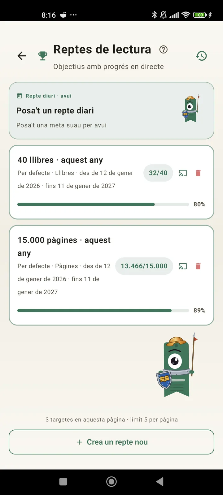

Coneix-te com a lector
Reptes, bingos, ginys i més funcions per treure tot el suc a la teva lectura. Novetat de la 3.7: ginys de reptes i de bingo.

Reptes de lectura
Posa't metes per pàgines, ratxes o gèneres. Fins a 15 reptes actius gratis, il·limitats amb Pro. A més, un repte diari personalitzable que no compta per al límit.

Repte diari
Cada dia una meta nova. Completa el repte abans de mitjanit per mantenir la ratxa.

Bingo lector
Cada mes, dos bingos nous amb caselles temàtiques. Completa files, columnes o el cartó sencer.

Resum setmanal
Cada dilluns, un cop d'ull a la teva setmana: pàgines llegides, temps total, ratxa i com ha anat respecte a l'anterior.

Resum mensual
Quan s'acaba un mes, Lecturameter te'l resumeix: pàgines, temps, llibres acabats, el teu ritme dia a dia i el teu llibre del mes.

Giny de bingo Pro
El cartó de bingo del mes, sempre a la vista, amb les caselles que has completat i les línies que has fet.

Giny de llibre Gratuït
Mira el llibre que estàs llegint des de la pantalla d'inici: portada, títol, autor, pàgines i percentatge de progrés, sempre al dia. Pots canviar-ne la mida perquè encaixi on vulguis.
De debò, tio, l'app és com una teràpia. He passat de llegir un parell de pàgines al dia a unes 20 pàgines al dia, i continuo millorant.Comentari d'un usuari, enviat per correu

Comparativa mensual Pro
Un cop d'ull ràpid als teus últims mesos sense obrir l'app. Barres amb les pàgines de cada mes i el mes actual destacat, per veure d'una ullada si vas millor o pitjor que el mes passat.

Giny de reptes Pro
Els teus reptes actius i el seu progrés a la pantalla d'inici. Tria quins vols mostrar des de la pantalla de Reptes.